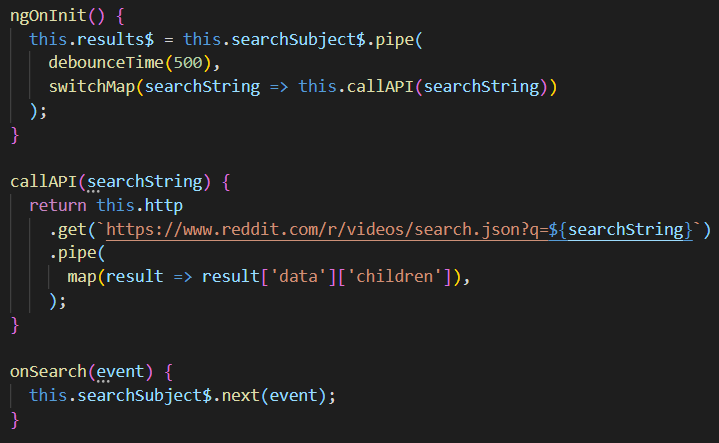

<mat-toolbar class="page-header"
  ><mat-toolbar-row>
    <span><h1 class="page-title">Reddit Video Search</h1></span>
    <span class="spacer"></span><span><app-home-link></app-home-link></span>
  </mat-toolbar-row>

  <mat-toolbar-row class="desc-row">
    <span
      ><p class="page-description">
        Use the search field below to dynamically search for videos on Reddit.
      </p></span
    >
  </mat-toolbar-row>
</mat-toolbar>
<div class="about">
  <h4>
    This example makes use of
    <a href="https://rxjs-dev.firebaseapp.com/api/operators/debounceTime" target="blank"
      >debounceTime</a
    >
    and
    <a href="https://rxjs-dev.firebaseapp.com/api/operators/switchMap" target="blank"
      >switchMap</a
    >
    to send the search string to the
    <a href="https://angular.io/guide/http" target="blank">httpClient</a> after 500ms of
    inactivity in the search field.
  </h4>
</div>
<div class="snippet">
  
</div>
<div class="search">
  <mat-form-field appearance="outline">
    <mat-label>Search</mat-label>
    <input
      matInput
      type="text"
      placeholder="type to search"
      [(ngModel)]="searchString"
      (ngModelChange)="onSearch($event)"
    />
  </mat-form-field>
  <div class="results" *ngFor="let result of results$ | async">
    <mat-card class="video-result">
      <mat-card-header class="video-title">
        {{ result.data.title }}</mat-card-header
      >
      <a>
        <div
          *ngIf="
            result.data.thumbnail != 'default' &&
            result.data.thumbnail != 'self'
          "
        >
          <a [href]="result.data.url" target="blank">
            </a>
        </div>
      </a>
    </mat-card>
  </div>
</div>
